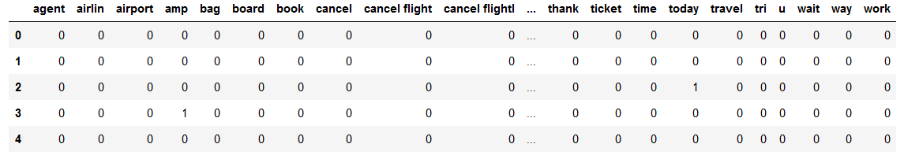
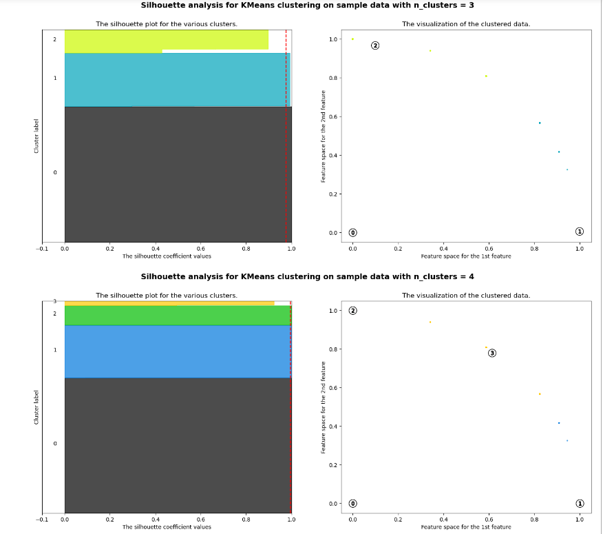
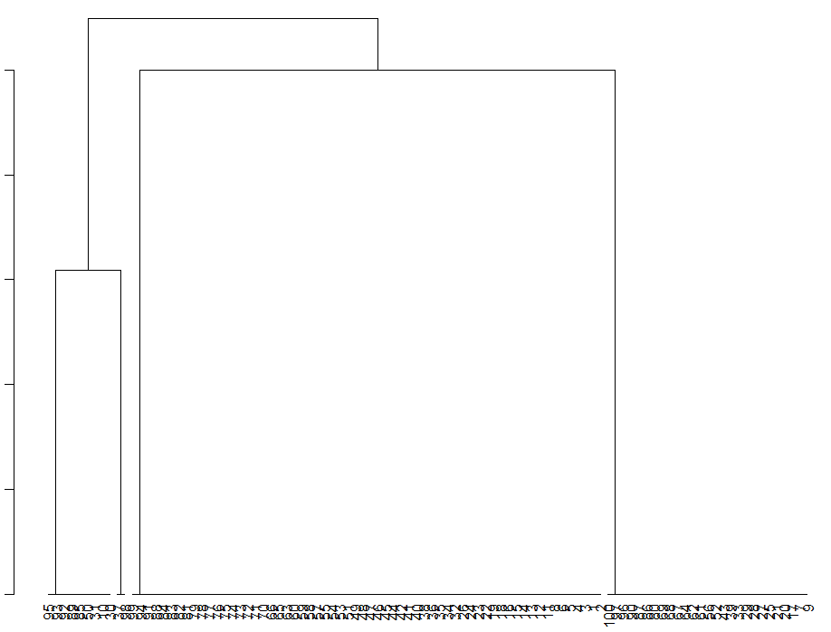
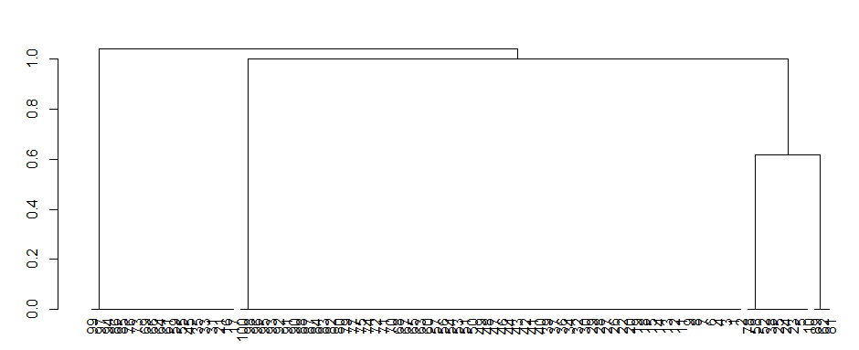

Clustering
Overview
Clustering helps in segmenting customers based on their expressed opinions, preferences, or experiences.
This segmentation can be valuable for airlines in tailoring their services and communication strategies to different customer groups.
Clustering can assist in identifying specific issues or challenges faced by customers.
By grouping tweets that discuss similar problems or complaints, airlines can prioritize addressing these issues and improving customer satisfaction.
Data Prep
Here is the unlabelled numeric data for clustering:
Link to the data
Code
Here is the code for Kmeans and the code for Heirarchical Clustering
Results
Kmeans
K-means clustering is a popular unsupervised machine learning algorithm used for partitioning a dataset into distinct, non-overlapping groups or clusters. The objective is to group similar data points together while keeping different groups as distinct as possible.
Let's see the result of implementing Kmeans with different number of clusters and compare the results using silouhette score. For simplicity, Kmeans is implemented on a small subset of columns to facilitate viszualization.

From the above results, we could conclude that 3 clusters is the best possible way of grouping the data, with respect to the improvement in silouhette score while increasing the number of clusters.
Heirarchical Clustering
Hierarchical clustering is another clustering technique that organizes data points into a hierarchy of clusters,
forming a tree-like structure known as a dendrogram. This method is particularly useful for exploring the relationships and hierarchy within the data.
Let's see a few results of this technique on a small sample of 100 points:


From the 3 random samples, we could notice that majorly there are 3 big clusters formed at the leaf nodes. The fourth cluster has merely 2-3 data points, which could be ingored in a bigger picture.
This result matches with the results of kmeans clustering.
Conclusion
Even though the number of labels are 4, only 3 distinct groups are deduced from Kmeans and Heirarchical clustering. This could be because of similar nature of textual data for 2 labels.